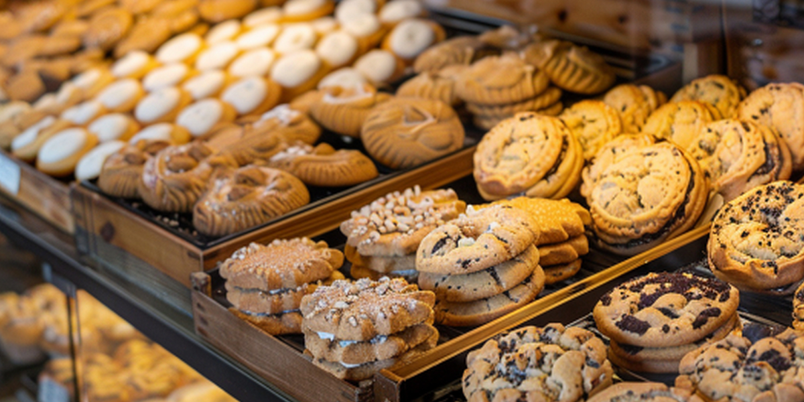

Products
Everything is made in small batches. Prices below are typical ranges and can vary with the season and size. To order ahead use the Pre-Order Form. You may pay when you pick up. No online checkout is needed.
Breads
Naturally leavened loaves with long slow fermentation. Baked every morning and usually gone by the early afternoon.


Country Sourdough
Everyday loaf with tangy crumb. Good for toast, sandwiches and soup nights.
Price Range: $6 - $8
Seeded Whole Wheat
Whole grain flour with sunflower and pumpkin seeds. Hearty and filling.
Price Range: $6 - $8
Pastries and Cookies
Naturally leavened loaves with long slow fermentation. Baked every morning and usually gone by the early afternoon.

Croissants
Layered, flaky and baked golden. Plain or Almond
Price Range: $3 - $4.50 each
Chocolate Chip Cookie Sandwich
Two soft cookies pressed around a melted chocolate center
Price Range: $3 - $4 each, or $16 - $20 per box of six
Cake
Custom cakes for birthdays, weddings and office celebrations. Ask about the flavors and dietary options available when placing a request.
Celebration Cakes
Layer cakes with buttercream or cream cheese frosting. Sizes Serve 12 - 40 guests.
Price Range: $40 - $120 Depending on size and design.
Cupcakes
Sold by the dozen. With Choice of classic flavors and seasonal specials.
Price Range: $30 - $40 per dozen